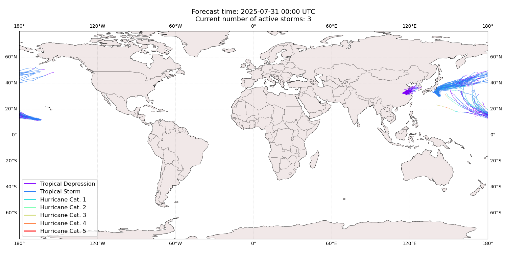
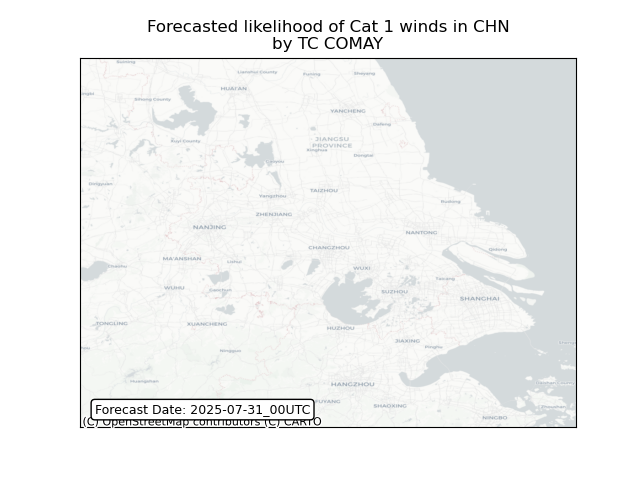
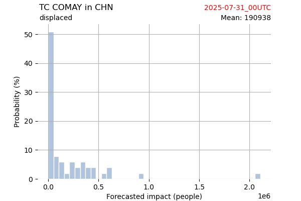
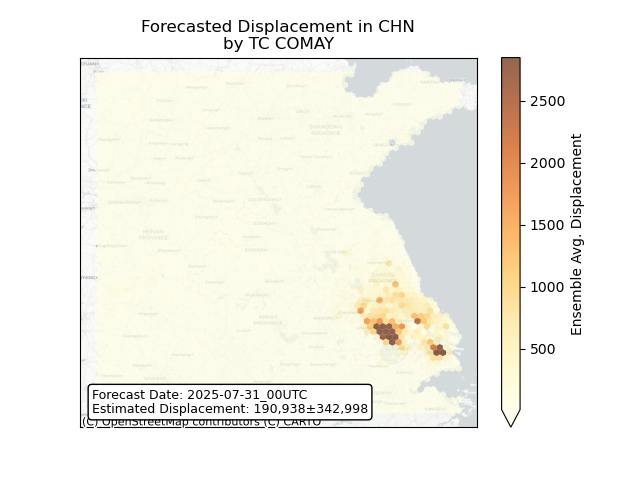

Displacement forecast
This is a WIP. All this is going to change, for now we’re just
dumping things here. ## Forecast for 2025-07-31 00:00 UTC
There are 3 active named storms.

Active storm ensemble tracks
KROSA All
countries: No forecast people exposed
Storm KROSA is not forecast to affect people in All countries.
KROSA All
countries: no forecast people displaced
Storm KROSA is not forecast to displace people in All countries.
IONA All
countries: No forecast people exposed
Storm IONA is not forecast to affect people in All countries.
IONA All
countries: no forecast people displaced
Storm IONA is not forecast to displace people in All countries.
COMAY China: areas affected
 ## COMAY China:
people exposed
 Histogram of possible exposed
population
Histogram of possible exposed
population
 Map of possible exposed
population
Map of possible exposed
population
COMAY China: people displaced

Histogram of possible displaced
population

Map of possible displaced
population